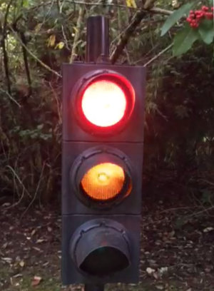

Traffic Lights Arduino
Arduino running some traffic lights

I have written a full, interrupt driven sketches for an arduino running some traffic signals. The models a simple pedestrian crossing (Pelican).
sequence[SEQUENCE_TYPES][MAX_STEPS][2] =
{
{ // Normal Traffic RAG
{RED, 3},
{RED + AMBER, 2},
{GREEN, 7},
{AMBER, 2},
{RED, 3},
{END_SEQUENCE, 1},
}
More technical details can be found in this post with the source code on github